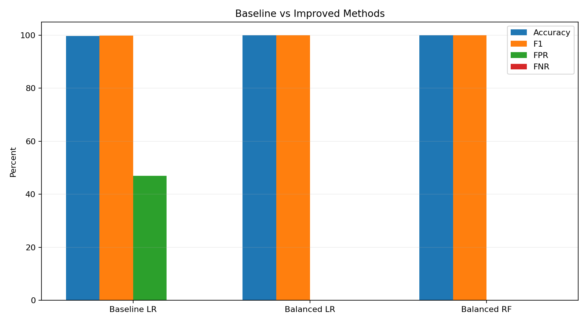
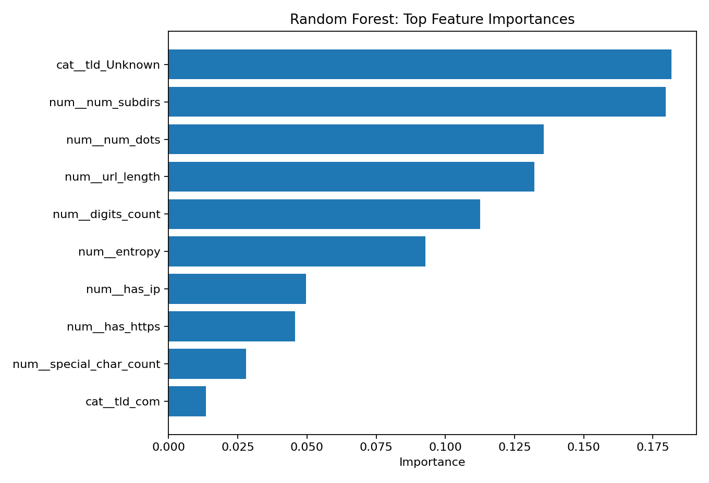
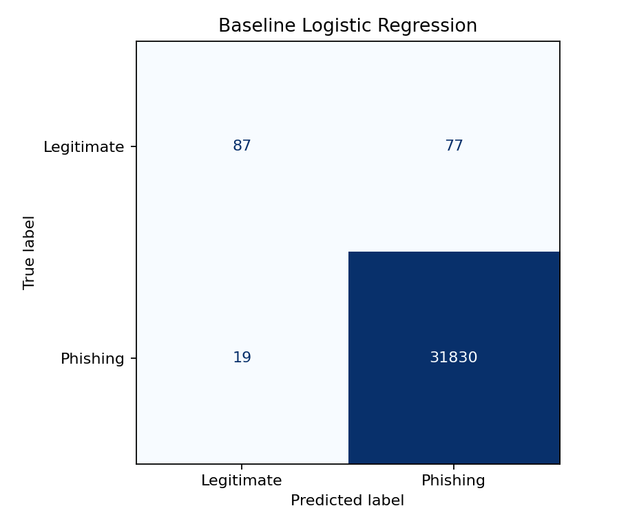
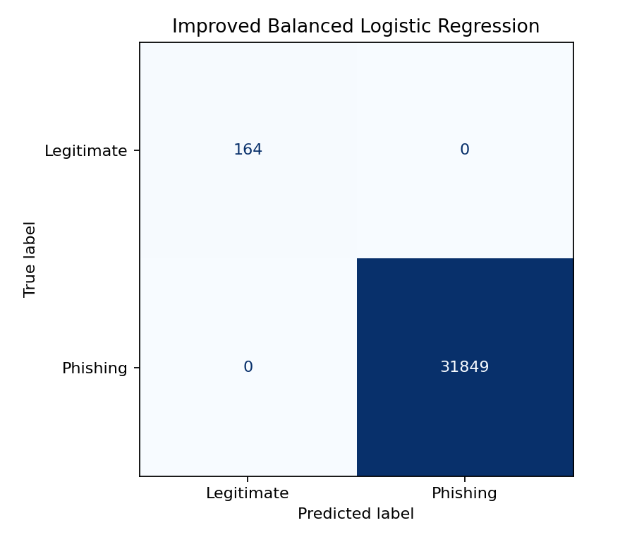

Input Validation
Check whether input matches the expected format and reject content that does not belong in the field.
This lab examines how untrusted user input can affect a web application and how validation, output encoding, and secure handling of user-generated content reduce XSS risk. The demo is intentionally safe: it never executes submitted HTML or JavaScript.
Check whether input matches the expected format and reject content that does not belong in the field.
Convert special HTML characters into display-safe text before showing user-generated content.
Render untrusted content as text instead of inserting it as executable HTML.
Unsafe code may insert a user's string directly into an HTML template. If the browser interprets that string as markup, attacker-controlled content can change the page or run script.
SIMULATED HTML STRING — NOT EXECUTEDThe secure example validates the field and renders the submitted value with text-safe handling. Special characters remain visible text instead of becoming active HTML.
ENCODED OUTPUTMachine learning for phishing URL detection.
Phishing URLs can imitate legitimate sites and expose users to credential theft or financial loss. A detector must identify malicious links without incorrectly blocking too many safe websites.
Can an expanded engineered feature set and class balancing improve a simple Logistic Regression baseline for phishing URL detection, and how does a balanced Random Forest compare under the same test split?
Phishing URLs Dataset with Extracted Features ↗
160,064 records and 13 columns.
Measure whether a stronger feature representation and imbalance-aware training reduce security errors, especially false positives on legitimate URLs, while maintaining high phishing recall.
The dataset is structured tabular data made from engineered URL features, so traditional classification methods are a strong fit. They train efficiently, are easy to compare, and make it possible to study the effect of feature selection and class balancing.
It provides an interpretable baseline and shows how far a simple linear classifier can go using a small set of URL features.
It can model nonlinear relationships and interactions between URL characteristics while still providing feature-importance information.
The baseline is a standard Logistic Regression model trained on only three simple features: url_length, num_dots, and entropy. No class weighting is applied. This creates a clear starting point before adding more features and imbalance handling.
The baseline uses only three features and does not account for the large class imbalance, causing many legitimate URLs to be flagged as phishing.
Expand the feature set, one-hot encode TLD, standardize numeric inputs for Logistic Regression, and use class_weight="balanced". A balanced Random Forest is also tested as a nonlinear comparison.
More URL signals give the models additional evidence, while class weighting increases the importance of the rare legitimate class during training.
Every model uses the same stratified 80/20 split and the same test records. Accuracy, precision, recall, F1, ROC-AUC, PR-AUC, false-positive rate, and false-negative rate are compared.
160,064 phishing/legitimate URL records from Kaggle. Missing TLD values are labeled Unknown.
Stratified 80% training / 20% testing with random_state=42. The same split is reused for every model.
Logistic Regression using URL length, dot count, and entropy with no class weighting.
Balanced Logistic Regression and balanced Random Forest using the expanded engineered feature set and TLD.
Accuracy, Precision, Recall, F1, ROC-AUC, PR-AUC, confusion matrix, False Positive Rate, and False Negative Rate.
The test set is held out from training and is not used to tune the models. All approaches are evaluated on the same observations.
| Method | Accuracy | Precision | Recall | F1 | FPR | FNR |
|---|---|---|---|---|---|---|
| Baseline Logistic Regression | 99.70% | 99.76% | 99.94% | 99.85% | 46.95% | 0.06% |
| Improved Balanced Logistic Regression | 100% | 100% | 100% | 100% | 0% | 0% |
| Improved Balanced Random Forest | 100% | 100% | 100% | 100% | 0% | 0% |
| Ablation: remove num_subdirs and TLD | 99.58% | 99.99% | 99.59% | 99.79% | 1.22% | 0.41% |




Yes on this held-out test split. The baseline misclassified 77 legitimate URLs as phishing, while the improved balanced methods had no test-set errors.
The most meaningful change was the false-positive rate, which dropped from 46.95% for the baseline to 0% for the two improved models.
They should be interpreted cautiously. This dataset contains unusually strong class-separation signals, so perfect test performance does not prove perfect real-world phishing detection.
Removing the especially strong num_subdirs and TLD signals reduced performance. This suggests the dataset's engineered features strongly influence the results.
tld_Unknown and num_subdirs among its strongest signals. Their unusually strong relationship with the target may reflect dataset construction patterns that would not generalize to all real-world URLs. Testing on a second independent dataset would strengthen the conclusion.The experiment files below reproduce the baseline, improved methods, evaluation metrics, and feature analysis.
The project shows why a research-oriented security experiment needs more than a high accuracy number. The simple baseline already appears strong because the dataset is overwhelmingly phishing, but it performs poorly on the rare legitimate class. Expanding the feature set and accounting for class imbalance produces much stronger test-set behavior. At the same time, the ablation study and feature importance results show that the dataset contains unusually strong signals, so additional external validation is necessary before claiming real-world reliability.